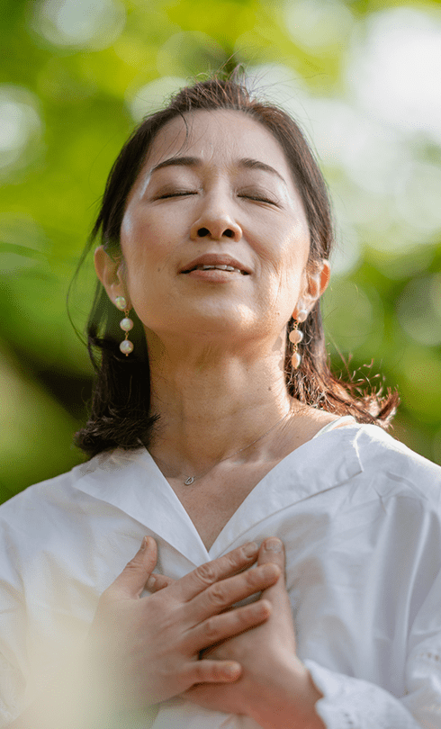

Experience serenity and divinity steps away from,
Mahavatar Babaji's Cave in the Himalayas.
Dunagiri Retreat
As Featured In
A Retreat For Your Soul
Nestled amidst the Dunagiri Mountains in the serene beauty of Uttarakhand, Dunagiri Retreat stands as a beacon for spiritual seekers. Founded in 2005, this eco-spiritual sanctuary is not just a yoga retreat but a profound journey into self-discovery. Revered for its proximity to the legendary Mahavatar Babaji's Cave and the sacred site of Dunagiri Temple, our retreat is a gateway to the transformative teachings of Kriya Yoga as expounded by Mahavatar Babaji and elucidated in Paramahansa Yogananda's 'Autobiography of a Yogi'.
At Dunagiri, spirituality and sustainability merge seamlessly. Our eco-friendly accommodations and organic gardens are set against a backdrop of the Himalayan splendor, offering a tranquil space for meditation retreats and a deep connection with nature. Immerse yourself in the spiritual essence of the holy river and the divine energy of Devi temples nearby.
Discover the message of Kriya Yoga, walk the sacred steps to Babaji's Cave, and explore the rich heritage of Lahiri Mahasaya and Neem Karoli Baba. Dunagiri Retreat, situated close to Dwarahat town and the charming Kukuchina village, attracts a large number of spiritual seekers annually, all drawn to the promise of peace and self-realization. Join us at Dunagiri Retreat, where every step is a step towards inner peace and spiritual awakening.
Reconnect with
your mind and
body.
your mind and
body.
“Keep close to Nature's heart...and break clear away,
once in a while, and climb a mountain or spend a
week in the woods. Wash your spirit clean.”
once in a while, and climb a mountain or spend a
week in the woods. Wash your spirit clean.”
Jhon Muir

NO MATTER YOUR MOTIVATION, WE CAN HELP